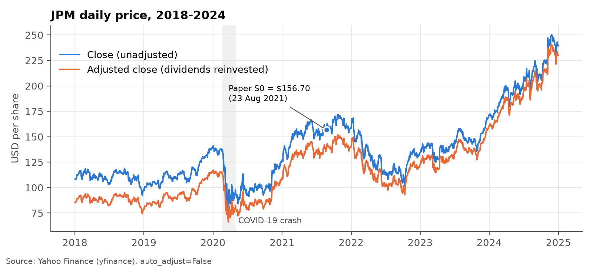
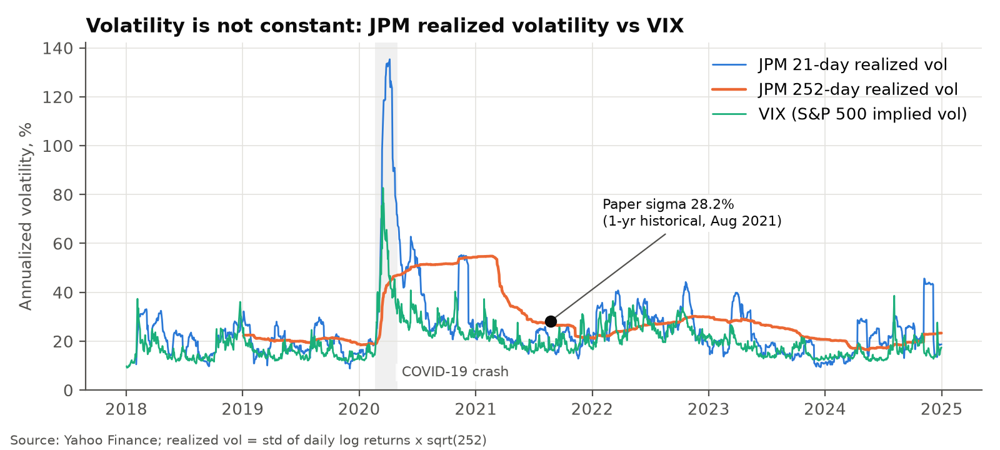
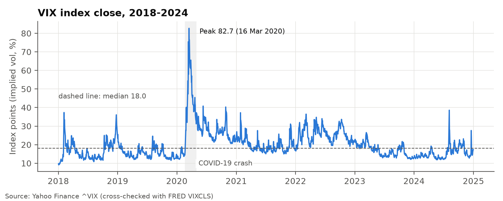
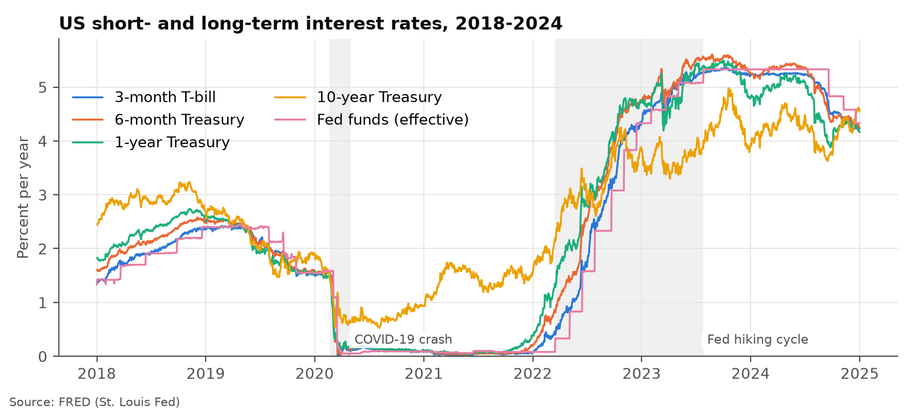
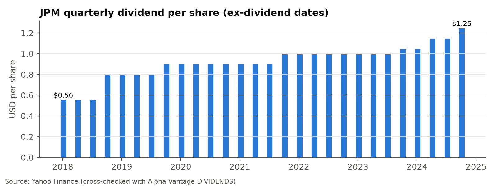

Week 1 Lab Report · Data Source Design & Initial Collection
The Week 1 tasks from the project brief:
Huang, Wang & Wan (2021) price a one-year JPM chooser option with a Black-Scholes-Merton (BSM) Monte-Carlo simulation. The holder chooses call or put at T1 = 0.5 years, and the option expires at T2 = 1 year with strike K = $150. Their inputs are fixed numbers: S0 = $156.70, σ = 28.2%, r = 0.15% and q = 2.33%. To rebuild and later extend that model with machine learning, we first need a reproducible dataset from which these inputs, and richer time-varying features, can be derived.
Python 3.14 in a virtual environment, with pandas 3.1, numpy 2.5, yfinance 1.8, fredapi 0.5, requests 2.34 and matplotlib 3.11 (minimum versions are pinned in requirements.txt).
API keys are stored in a gitignored .env file, because the repository is public.
| Module | What the live connection test does |
|---|---|
src/data_sources/yahoo.py | Downloads JPM for 20–24 Aug 2021 and asserts that the close on 23 Aug equals the paper's $156.70. |
src/data_sources/fred.py | Downloads the 1-year Treasury yield (DGS1) around the same date. |
src/data_sources/alpha_vantage.py | Makes one uncached GLOBAL_QUOTE call for JPM. It detects Alpha Vantage's "HTTP 200 with an error message" responses, rate-limits calls to about one every 1.5 s, and caches responses on disk to save the 25-calls/day quota. |
src/pull_all.py | Runs all three tests, pulls every dataset, runs the validation suite and writes data/raw/manifest.json. |
auto_adjust=False. The paper's S0 is the unadjusted close; the adjusted close (dividends reinvested) is about $19 lower on the same day and would misstate S0.yfinance treats end as exclusive, so the code adds one day to keep 31 Dec 2024.[yahoo] OK JPM close on 2021-08-23 = 156.70 (paper: 156.7) [fred] OK DGS1 on 2021-08-23 = 0.07% (10 obs) [alpha] OK JPM latest trading day 2026-11-20, price 310.53
| File | Content | Rows |
|---|---|---|
yahoo_jpm_daily.csv | JPM OHLC, adjusted close, volume, dividends, splits | 1,761 |
yahoo_vix_daily.csv | VIX daily bars | 1,761 |
fred_daily.csv | DTB3, DGS3MO, DGS6MO, DGS1, DGS2, DGS10, DFF, VIXCLS | 2,557 |
fred_monthly.csv | CPIAUCSL, UNRATE | 84 |
av_jpm_dividends.csv | Dividend history (cross-check) | 28 |
av_jpm_monthly_adjusted.csv | Month-end prices (cross-check) | 84 |
av_treasury_3month.csv / _10year.csv | Daily Treasury yields (second source) | 1,827 each |
av_jpm_daily_compact.csv | Most recent 100 trading days (free-tier cap) | 100 |
The checks cover row counts and date coverage, a shared trading calendar for JPM and VIX, the paper anchor price, price ranges,
dividend counts in both sources, agreement between Yahoo and FRED on VIX, and completeness of every FRED series. Eight checks failed on the first run. The causes were that FRED's fed funds series (DFF) is published every calendar day, which adds weekend rows to the combined table, and that the VIX tolerance was
stricter than the two sources' actual differences. The data was correct both times, so we changed the checks to judge each series on weekdays only and
to require VIX agreement on at least 99.5% of days. After the fix, Treasury series are blank on 77 of 1,827 weekdays (4.2%, bond-market holidays), and the two VIX sources
agree to within 0.01 on 1,759 of 1,761 days.
| Input on 23 Aug 2021 | Paper | From our data | Status |
|---|---|---|---|
| S0: JPM close | $156.70 | $156.70 | Exact |
| q: trailing 12-month dividends ÷ S0 | 2.33% | 2.30% | Within 0.03 pt |
| σ: 1-year historical volatility | 28.2% | 27.2% | 1.0 pt lower |
r: 1-year Treasury (DGS1) | 0.15% | 0.07% | No tenor matches |
To explain the σ gap we recomputed volatility under 272 combinations of convention: log or simple returns, adjusted or unadjusted prices, sample or population standard deviation, annualization by 250, 252 or 365 days, eleven window start dates, and weekly or monthly sampling. The closest result is 27.7%, and no combination gives 28.2%. Because S0 matches to the cent, the price data itself is not the cause; the gap most likely comes from a calculation step the paper does not describe. For r, every Treasury yield on that date (0.05% to 0.23%) differs from 0.15%. One hypothesis is 6-month USD LIBOR, whose tenor matches T1; it is unverified because FRED no longer hosts LIBOR. Week 3 will price the option with both the paper's inputs and our data-derived inputs to measure how much these gaps move the price.





All three Week 1 deliverables are complete: the data specification, working connection scripts for three APIs, and a validated 2018–2024 raw dataset. Week 2 will clean and align the data (interpolation, IQR outlier checks, joining everything to the NYSE calendar) and build at least 10 features (rolling volatilities, returns, dividend growth, the VIX–JPM correlation, interest-rate momentum and sentiment), with GitHub Actions scheduling the pipeline.
git clone https://github.com/aiden-zl/advanced-chooser-option-pricing-model cd advanced-chooser-option-pricing-model python3 -m venv .venv && source .venv/bin/activate pip install -r requirements.txt cp .env.example .env # then add your FRED and Alpha Vantage keys python -m src.pull_all # connection tests, raw pull, 20 validation checks python -m src.week1_figures # figures and deliverables/week1/week1_stats.json
References: Huang, Z., Wang, X. & Wan, W. (2021). Exploration of JPMorgan Chooser Option Pricing. BCP Business & Management, 15, 93–102.